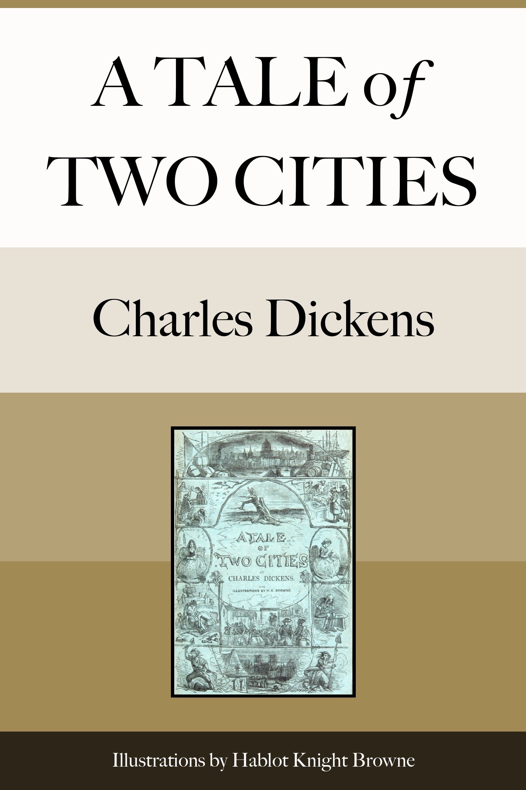

A Tale of Two Cities
قصة مدينتين
الأدب
ملك عام
ترجمة كاملة
قصة مدينتين لديكنز: لندن وباريس في زمن الثورة — الدكتور مانيت وسيدني كارتون وتشارلز دارناي والمقصلة، «كان أفضل الأزمنة وكان أسوأ الأزمنة». ترجمة كاملة.
| المؤلف | تشارلز ديكنز — Charles Dickens |
| سنة النص الأصلي | ١٨٥٩ |
| كلمات المصدر (الإنجليزية) | ١٣٦٦٨٣ |
| كلمات الترجمة (العربية) | ١٠٤١٣٥ |
| مقاطع الترجمة المدققة | ٧٣ |
| مدة القراءة التقريبية | ≈ ٢٣٦٥ دقيقة |
الترخيص والحقوق: النص الأصلي في الملك العام (غوتنبرغ #98). هذه الترجمة العربية منشورة بإذن حر.